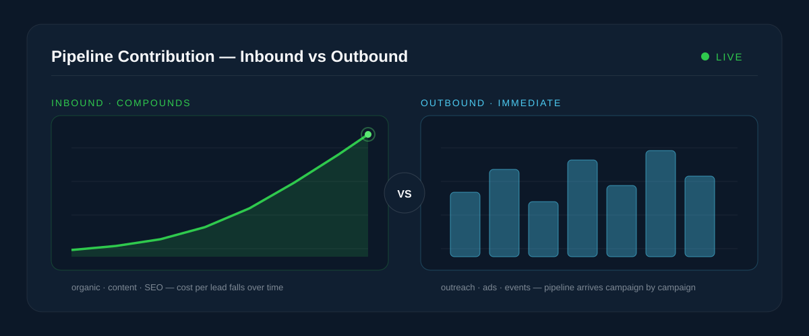

If you run marketing for a growing business, you have probably lived this argument. One camp says content and SEO are the only sustainable way to grow. The other says nothing beats picking up the phone and talking to buyers this week, not next quarter.
Both camps are right — about different situations. The real question in the inbound vs outbound marketing debate is not which approach is better in the abstract. It is which approach fits your product, your sales cycle and your runway right now. This guide walks through exactly that.
What is inbound marketing?
Inbound marketing means earning attention rather than buying or interrupting it. You publish content that answers the questions your buyers are already asking — blog articles, comparison pages, guides, free tools, videos — and prospects find you through search engines, social shares and referrals. They convert on their own timeline, usually through a form, a newsletter or a demo request.
The economics are what make inbound special. A well-ranked article keeps sending you visitors for years after you wrote it. That is why inbound is often described as compounding: each month of consistent publishing adds to a growing asset instead of resetting to zero.
A concrete example. A B2B accounting platform publishes "How to file quarterly taxes as a SaaS company." It ranks on Google. Eighteen months later, that single page still delivers a steady stream of finance leads every week — at no additional cost beyond the original effort of writing it. No ad campaign behaves that way.
The trade-off is patience. Inbound typically needs several months before results are visible, and it punishes inconsistency. Teams that publish four great pieces and then go quiet get almost nothing for their effort. We cover how to structure the machine behind it in our complete guide to inbound marketing.
What is outbound marketing?
Outbound marketing is the direct approach: you identify who your buyers are and reach out to them before they come looking. Cold email, cold calling, LinkedIn outreach, paid advertising, sponsorships, events and direct mail all belong to this family. Some teams call the sales-led portion of it outbound lead generation or "outbound sales."
Outbound's defining property is control. You choose exactly who hears from you, when, and with what message. If you sell to hospital procurement directors in Texas, you can have twenty of them reading your email by Friday. Inbound can never promise that.
A concrete example. A cybersecurity startup builds a list of 300 mid-market fintech companies, researches each one's compliance pressures, and sends short, genuinely personalized emails referencing a specific risk in each prospect's setup. Out of 300, perhaps 25 reply and 8 book a call. That is a pipeline created in two weeks — from a standing start.
The trade-off is that outbound stops when you stop. Every lead has a direct, recurring cost in labor or ad spend, and reply rates collapse when the targeting is lazy. Our guide to outbound marketing that earns replies goes deeper on doing it well.
Inbound vs outbound: key differences at a glance
The two approaches differ at almost every point of the funnel — how customers find you, how much each lead costs, and how quickly results arrive.
| Inbound | Outbound | |
|---|---|---|
| Who starts the conversation | The buyer finds you | You contact the buyer |
| Core channels | SEO, blog content, free tools, email nurture, social | Cold email, cold calls, LinkedIn outreach, paid ads, events |
| Time to first results | Months — often 3 to 6 before meaningful traction | Days to weeks |
| Cost curve | High effort up front, cost per lead falls over time | Roughly constant cost per lead, rises as channels saturate |
| Targeting precision | Broad — whoever searches the topic | Surgical — exact companies and job titles |
| Buyer intent | High — they were already looking | Low to none — you create the interest |
| Scales by | Publishing more assets that keep working | Adding more people, ad budget or tooling |
| Stops working when | You stop publishing (slowly) | You stop spending (immediately) |
Cost and ROI: how the math differs
Comparing budgets line-by-line misleads people, because the two approaches spend money at different times.
Inbound is an investment curve. You pay heavily up front — content production, SEO work, marketing automation — while results lag. Then the curve bends: traffic compounds, and your customer acquisition cost (CAC) falls month after month because old assets keep producing without new spend. Industry research from firms like HubSpot has consistently found inbound leads cost significantly less than outbound leads once the engine matures.
Outbound is a vending machine — with rising prices. Put a fixed amount in, get a roughly predictable number of meetings out. That predictability is genuinely valuable: you can model it, forecast it and scale it. But CAC never falls. If anything it creeps upward as your best prospects get contacted, ad auctions get more expensive and reply rates dip.
Rule of thumb: judge outbound ROI over a quarter, and inbound ROI over a year. Measuring inbound at ninety days almost always makes it look like a failure — right before it starts working.
A useful mental model: outbound buys revenue, inbound builds an asset that produces revenue. Healthy companies usually want both — cash flow now and an appreciating asset for later.
Lead quality and sales cycles
The two approaches also hand your sales team very different conversations.
Inbound leads: higher intent, less control
Someone who found your comparison page, read three articles and requested a demo has already sold themselves halfway. Inbound leads tend to close faster once they enter the pipeline and need less persuasion. The catch is you cannot choose who they are — a great article attracts students and hobbyists alongside enterprise buyers, so you need lead scoring to separate the two.
Outbound leads: perfect fit, colder start
An outbound lead matches your ideal customer profile exactly — you picked them. But they were not thinking about your problem when you called, so the sales cycle runs longer: you must create urgency, not just answer questions. For expensive products with narrow markets, that extra work is worth it, because the deal size justifies the effort.
| Inbound lead | Outbound lead | |
|---|---|---|
| Intent when they arrive | Already researching a solution | Usually not actively looking |
| Fit with your ideal customer | Varies — needs qualification | Exact — you selected them |
| Typical sales cycle | Shorter | Longer |
| Best for | Products people search for | High-value deals in defined markets |
Pros and cons of each approach
Inbound marketing
- Pros: compounding returns, falling CAC over time, high-intent leads, builds brand authority, keeps working while you sleep
- Cons: slow to start, requires consistent publishing, hard to target specific accounts, results are difficult to forecast early on
Outbound marketing
- Pros: immediate pipeline, surgical targeting, predictable and forecastable, ideal for entering new markets or launching products
- Cons: cost per lead never falls, stops the moment you stop, low reply rates without real personalization, can damage brand if done lazily
Real companies: who uses what
HubSpot is the textbook inbound story — it practically coined the term. Years of free tools, courses and search-optimized content built an audience that now feeds its sales team at a scale competitors struggle to match.
Salesforce, in its early years, grew on aggressive outbound: disciplined sales development teams, events and direct outreach to named accounts. Enterprise software with six-figure deals rarely gets bought through a blog post alone.
Stripe shows the developer-flavored inbound play: documentation so good it ranks for everything developers search, turning technical content into a growth channel.
Most mature companies converge on a blend. Even HubSpot runs outbound to enterprise accounts today, and even outbound-heavy enterprise vendors publish content to warm up the market before their reps call. SaaS businesses in particular tend to layer both — something we see constantly in our work with SaaS platform clients.
When to use inbound, when to use outbound
Choose inbound first when:
- Your customers actively search for solutions like yours
- Your deal size is small to mid-sized, so per-lead outreach costs would eat the margin
- You can afford three to six months of ramp-up before judging results
- You sell into a broad market rather than a short list of named accounts
Choose outbound first when:
- You need pipeline this quarter — a new startup, a new product line, a revenue gap
- Your total market is a definable list of companies (the classic account-based scenario)
- Deal sizes are large enough to justify researched, personalized outreach
- Nobody searches for your category yet because it is genuinely new
Early-stage founders: start with outbound even if inbound is your long-term plan. The direct conversations teach you how buyers describe their problem — and that language becomes your best-performing content later. More on this in our startup growth deep-dive.
How to combine inbound and outbound into one strategy
The strongest go-to-market motions treat the two as one system: outbound for immediacy and precision, inbound for compounding and trust. A practical sequence for building the hybrid engine:
- Define one ideal customer profile. Both motions fail when they chase different audiences. Agree on industry, company size and the job titles who feel the pain.
- Launch outbound to that profile immediately. Small, researched, personalized batches. The goal is meetings and market intelligence.
- Turn every objection into content. Each question prospects ask on calls becomes an article, a comparison page or an FAQ entry. Your outbound conversations are your inbound content calendar.
- Arm outreach with that content. A cold email that links to a genuinely useful guide converts better than one that asks for a meeting. Content makes outbound warmer.
- Retarget and nurture the near-misses. Prospects who opened but never replied, and visitors who read but never converted, enter the same automated nurture sequences.
- Route everything into one CRM and one dashboard. If inbound and outbound report in different tools, you will never know which deals each motion actually influenced.
- Rebalance quarterly. As inbound compounds, shift outbound effort up-market toward the larger accounts where personal outreach pays best.
Notice how much of that list is systems work — CRM integration, automation, attribution, dashboards. That is the part most teams skip, and it is the part we build for clients at ValourAI: the technical spine that lets both motions share data instead of fighting over credit.
Common mistakes to avoid
- Judging inbound on outbound's clock. Cancelling a content program at month three is like cutting down an orchard because it fruited slowly.
- Scaling outbound before personalizing it. Blasting ten thousand identical emails burns your domain reputation and your brand simultaneously.
- Publishing content with no capture layer. Traffic without forms, lead magnets or CTAs is a vanity metric, not a pipeline.
- Running the motions in silos. Separate teams, tools and targets guarantee duplicated effort and arguments over attribution.
- Ignoring the follow-up. Most replies and conversions happen after several touches. One email or one blog visit rarely closes anything.
- Measuring activity instead of revenue. Emails sent and posts published are inputs. Meetings booked and deals closed are the outputs that matter.
Best practices for 2026
- Write for answer engines, not just search engines. Buyers increasingly get their first answer from AI assistants. Clear structure, direct answers and genuine expertise are what those systems cite.
- Use AI for research, humans for judgment. AI-assisted prospect research and drafting are table stakes now; fully automated outreach that nobody reviews is spam with better grammar.
- Go deeper, not wider, with content. Ten authoritative pieces that demonstrate first-hand experience outperform a hundred thin posts — for both readers and rankings.
- Protect your sending infrastructure. Warmed domains, verified lists and conservative volumes are now the difference between the inbox and the void.
- Score leads on behavior, not just fit. Modern lead scoring blends who the prospect is with what they actually did — pages read, tools used, emails engaged.
- Attribute revenue, not clicks. Multi-touch attribution connected to your CRM tells you what a blog post or an email sequence is worth in currency, not sessions.
Recommended tools
You do not need all of these — pick one per row and integrate them properly.
| Job to be done | Popular options | Motion |
|---|---|---|
| SEO research and tracking | Semrush, Ahrefs | Inbound |
| Content management | WordPress, Webflow | Inbound |
| Marketing automation and nurture | HubSpot, Brevo, Mailchimp | Inbound |
| Prospect data and lists | Apollo.io, LinkedIn Sales Navigator | Outbound |
| Outreach sequencing | Lemlist, Instantly, Outreach | Outbound |
| CRM and pipeline | HubSpot CRM, Pipedrive, Salesforce | Both |
| Analytics and attribution | Google Analytics 4, Looker Studio, custom dashboards | Both |
| Scheduling | Calendly, HubSpot Meetings | Both |
Integration beats features. A modest stack where every tool feeds one CRM outperforms a premium stack of disconnected tools. Budget as much for connecting your tools as for buying them.
Frequently asked questions
Is inbound marketing cheaper than outbound?
Over time, usually yes — inbound's cost per lead falls as content compounds, while outbound's stays flat or rises. But in the first few months inbound is often the more expensive option, because you are paying for production before any results arrive.
How long does inbound marketing take to work?
Plan for three to six months before meaningful organic traction, and closer to a year before inbound carries a serious share of pipeline. Competitive niches take longer; focused niches with weak competition can move faster.
Is cold email still effective in 2026?
Yes — but only researched, personalized, low-volume cold email. Generic mass blasts are filtered by mailbox providers and ignored by recipients. Small batches with genuine relevance still book meetings reliably.
Is paid advertising inbound or outbound?
Most marketers class paid ads as outbound, because you are buying attention rather than earning it. Search ads sit in a gray zone — the buyer showed intent by searching — but the budget behaves like outbound: leads stop when spending stops.
Which is better for B2B companies?
It depends on deal size and market shape. Large deals in a definable market favor outbound; broad markets with search demand favor inbound. Most B2B companies with sales teams end up running both against the same ideal customer profile.
Which is better for startups with small budgets?
Start with founder-led outbound — it costs time rather than money and produces learning as well as leads. Reinvest what you learn into inbound content as soon as you can sustain publishing consistently.
What is the difference between inbound leads and outbound leads?
An inbound lead found you and raised their hand, so intent is high but fit varies. An outbound lead was hand-picked to match your ideal customer, so fit is exact but intent starts near zero. They need different sales conversations.
Can inbound marketing fully replace outbound?
For some product-led, low-price products, yes. For companies selling high-value contracts to specific accounts, no — the buyers you most want rarely arrive through search alone, and waiting for them costs more than reaching out.
How do I measure which approach is working?
Track cost per qualified lead, meeting-to-opportunity rate and CAC per channel inside one CRM. Judge outbound quarterly and inbound annually, and attribute revenue — not traffic or opens — to each motion.
What does a good starting budget split look like?
A common starting point for teams that need pipeline now is roughly 60–70% outbound and 30–40% inbound, shifting toward inbound each quarter as content compounds. Treat that as a starting hypothesis to rebalance against your own CAC data, not a rule.
Key takeaways
- Inbound earns attention and compounds: slower to start, cheaper over time, higher-intent leads.
- Outbound buys precision and speed: pipeline in weeks, exact targeting, but costs never fall.
- Judge outbound over a quarter and inbound over a year — measuring both on the same clock is the classic budgeting mistake.
- The strongest strategy is hybrid: outbound for immediate revenue and market learning, inbound to make every future lead cheaper.
- The connective tissue — one ICP, one CRM, shared attribution, automated nurture — matters more than either motion alone.
The bottom line
"Inbound vs outbound" is a false choice for most growing companies. Outbound is how you make this quarter; inbound is how you make next year cheaper than this one. Run outbound to learn and earn now, feed those learnings into inbound content, and wire both into one measurement system so you always know where the next dollar is best spent.
Your next step: write down your ideal customer profile in one paragraph, then honestly assess whether those buyers are searching for your category. If they are, start the content engine now and bridge with outreach. If they are not, build the outbound motion first — and let every sales call write your future content calendar.
If you want the technical side of that engine built properly — CRM integration, automation, lead scoring and revenue dashboards — that is precisely the kind of system we engineer at ValourAI.
Keep reading on the ValourAI blog
- Inbound Marketing: Build a System That Attracts Customers While You Sleep
- Outbound Marketing That Opens Doors, Not Spam Folders
- Building SaaS Platforms That Scale
- Technology Strategy for Startups
- Engineering for E-Commerce Growth
- Digital Transformation for Enterprises